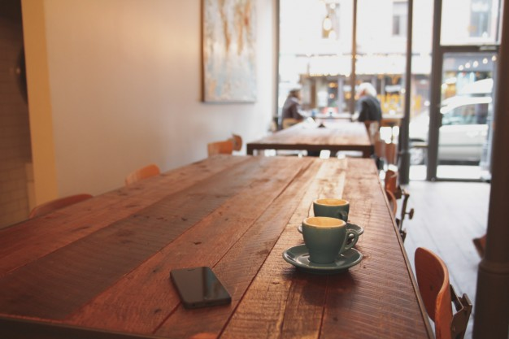
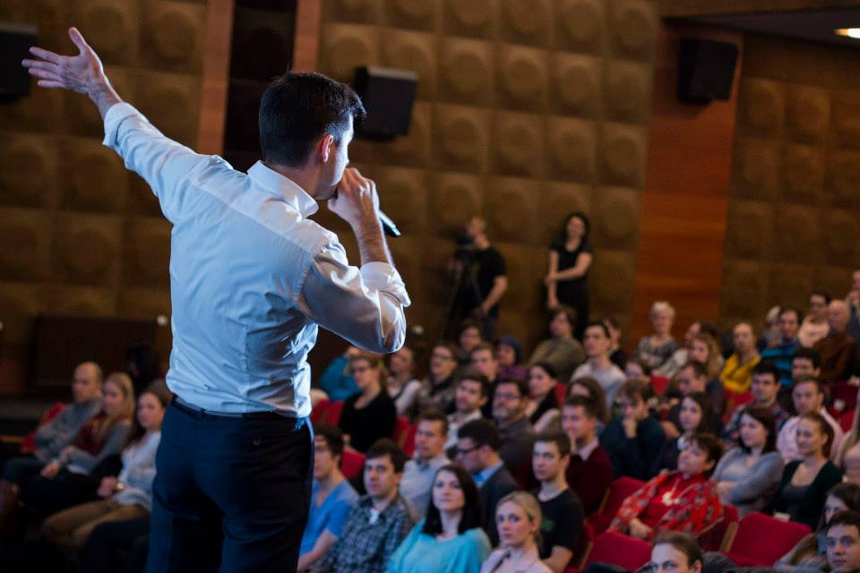

-

Setkávání s osobnostmi, které mají co říct.
-

Inspirativní rána jsou ...
Mladý brněnský projekt, jehož cílem je vytvářet příjemné prostředí pro rozšiřování obzorů a navazování nových kontaktů. Vstupné je dobrovolné a navíc vám vždy nabídneme i malé občerstvení. Začněte svůj den jinak!
Kdo za projektem stojí
Matúš Labanc
 Matúš je vášnivým cestovatelem a vyhledávačem dobré nálady. Nejenže prostopoval téměř celou Evropu, ale podíval se taky do Indie a Pákistánu. Studoval na Slovensku, v Česku a v Portugalsku. Nějaký čas strávil na pracovní stáži taky ve Francouzském městě vína – Bordeaux. Hraje na baskytaru, leze po horách, miluje vaření a francouzštinu. Stál při zrodu Inspirativních rán a na jejich chodu se podílí dodnes.
Matúš je vášnivým cestovatelem a vyhledávačem dobré nálady. Nejenže prostopoval téměř celou Evropu, ale podíval se taky do Indie a Pákistánu. Studoval na Slovensku, v Česku a v Portugalsku. Nějaký čas strávil na pracovní stáži taky ve Francouzském městě vína – Bordeaux. Hraje na baskytaru, leze po horách, miluje vaření a francouzštinu. Stál při zrodu Inspirativních rán a na jejich chodu se podílí dodnes.
Marie Rotnáglová
 Marie stále věří, že se jednoho dne naučí vařit, parkovat a že si vezme Batmana. Kromě denního snění nad těmito věcmi ráda čte, sleduje filmy a poslouchá hudbu, jako každý obyčejný smrtelník v jejím věku. Nemá ráda pseudointelektuály, ale sama si občas nasadí brýle, aby vypadala chytřejší. Zatím pracovala na festivalech, moderovala v rádiu, hrála divadlo, zpívala ve sprše a plakala u Titaniku. V Inspirativních ránech mluví do mikrofonu od září 2013 a je vděčná za to, kolik fajn lidí už díky tomu mohla potkat.
Marie stále věří, že se jednoho dne naučí vařit, parkovat a že si vezme Batmana. Kromě denního snění nad těmito věcmi ráda čte, sleduje filmy a poslouchá hudbu, jako každý obyčejný smrtelník v jejím věku. Nemá ráda pseudointelektuály, ale sama si občas nasadí brýle, aby vypadala chytřejší. Zatím pracovala na festivalech, moderovala v rádiu, hrála divadlo, zpívala ve sprše a plakala u Titaniku. V Inspirativních ránech mluví do mikrofonu od září 2013 a je vděčná za to, kolik fajn lidí už díky tomu mohla potkat. Pavla Šoukalová
 Pavla vystudovala bakalářský stupeň divadelního manažerství na JAMU v Brně, a protože si pořád ještě nebyla jistá, jaký je její životní úděl, rozhodla se zkusit ještě něco z jiného soudku, a tak je teď studentkou speciální pedagogiky. Ze všeho nejradši má prostě lidi a setkávání s nimi, svoji velkou rodinu, přátele, zábavu, hudbu, některé sporty, tvorbu dětských omalovánek a v poslední době vše co je puntíkaté. Nemá ráda zimu a lidi, kteří se skoro vůbec neusmívají. K práci na Inspirativních ránech ji přizval Matúš už v době jejich zrodu.
Pavla vystudovala bakalářský stupeň divadelního manažerství na JAMU v Brně, a protože si pořád ještě nebyla jistá, jaký je její životní úděl, rozhodla se zkusit ještě něco z jiného soudku, a tak je teď studentkou speciální pedagogiky. Ze všeho nejradši má prostě lidi a setkávání s nimi, svoji velkou rodinu, přátele, zábavu, hudbu, některé sporty, tvorbu dětských omalovánek a v poslední době vše co je puntíkaté. Nemá ráda zimu a lidi, kteří se skoro vůbec neusmívají. K práci na Inspirativních ránech ji přizval Matúš už v době jejich zrodu.